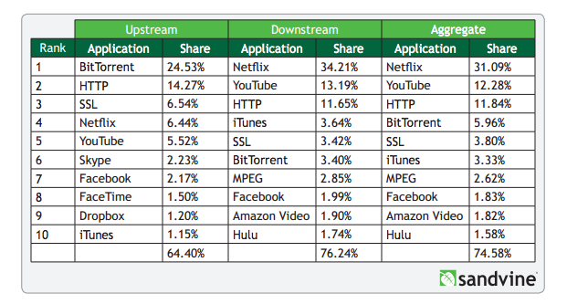

Unit 2, Week 4 Cultural Blogpost
Issues in the Tech World
Monday January 19, 2015
In today's blogpost I am going to discuss a problem in the tech world that interests me. One of the biggest challenges facing the tech industry is how the growth in demand for content greatly exceeds the current bandwidth supply. This is particularly true for rich media like video streaming. According to a Sandvine study for the first half of 2014, Netflix and YouTube services alone accounted for almost half of all data usage:

Streaming a video or audio file consists of viewing or consuming a file as it is downloaded, rather than while it is being downloaded. Streaming a file also allows the viewer to keep free space rather than keep the file on a local device. The restriction on the time at which a file is downloaded has to do with our own internet connection and availability and the file itself. It is important to realize what currently throttles user downloads is not "speed" but actually availability. Internet connectivity is best thought of as a highway and our experience improves more easily as the lanes increase, not as the speed limit increases.
Imagine our internet availability is a one lane highway aka 1 MbpS and we are trying to download a set of 10 cars aka a 10Mb file. I trust we can do that math, but it will take 10 seconds roughly to view this file in our browser. However, if your internet provider decided to allocate more lanes to you, say 5 lanes for 5 MbpS, that same file will take only 2 seconds to populate in your browser or download.
I think it is also worth noticing that file types themselves are not determinant of size or bandwidth need. In general text will be less size than richer media like video. According to Pottermore and iTunes the entire textual library of the Harry Potter story is .013 GB, the audio book library is 3.11 GB and the 8 movies are in total 37.63 in HD. This is supposedly the same content and story consumed. In fact, the books are much more robust in terms of content but are far less taxing in terms of file size.
As we move from a text on-demand society towards a rich-media on-demand society the current bandwidth allocations may not be enough for users. The drawbacks we experience include suboptimal waiting times and low, pixilated rich media. This matters because consuming a movie or television episode piecemeal is frustrating and may even compromise the user experience. This is most problematic with live consumption events like sports and breaking news. This type of fresh content needs to be consumed as it is produced for it to have its highest value. Think about how many reruns of a superbowl or breaking news event we watch compared to the live event.
The solutions for this issue revolve primarily around two different points of throttle, as you may guess, hardware and software. Improving the hardware experience means allocating more lanes to each internet user. According to netindex the average availability in the United States sits at 32.1 MbpS. By improving infrastructures and the amound of "lanes" available to allocate we could increase the average lane availability and therefore decrease wait times like we discussed in the 10 Mb example above. Increasing the aggregate lane availability amounts to physical infrastructure improvement, like laying more fiberoptic cables to transmit data.
We are also interested in the software side of the solution, file compression. There are two types of compression, lossless and lossy. Lossless compression uses statistical redundancy in code to reduce file sizes. This means not counting duplicated words twice for example but instead using callbacks and variables for size efficiency. Conversely, lossy compression types purposefully reduce meaningful parts of files that are hopefully not perceptible for users. In our analogy compression would mean reducing the actual amount of cars trying to traverse the highway while conveying exactly the same (lossless) or observably the same (lossy) media content.
From my understanding and research, it appears like the software development of video/streaming compression is good. Perhaps there is opportunity for software developers to see if human perception of rich media might tolerate lossy compression, but display types like HD might be a logical level users both enjoy and operates at the optimum perception level of "high quality" video streaming. Perhaps the solution for the increasing demand of rich media, particularly on mobile devices, will come more from hardware improvements and more "lane" availability to content consumers.